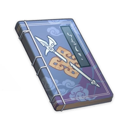

Liyue · Books & Literature
Legend of the Shattered Halberd
This six-volume Liyue-set fantasy by Inazuma's Yae Publishing House follows Mir and Weiyang's hunt for nine cursed swords.

A Liyue-set story from Yae Publishing House
Legend of the Shattered Halberd is a six-volume graphic novel written by Mr. Nine and published in-universe by Inazuma's Yae Publishing House. Copies are collected in Liyue, and the editor describes it as the house's first effort to incorporate Liyue elements into one of its novels. Distribution and setting therefore do not make it a Liyue history book.
Volumes I–V tell the story of Mir and Weiyang; Volume VI, a quest item in Xingqiu's Story Quest, changes the direction and style of the serial. The collection itself contains a useful source about its fiction: the final volume includes the publisher's explanation of that abrupt ending.
Volumes I–II: Mir, Weiyang, and the Ominous Swords
The opening calls the series a graphic novel about the God King's Halberd. It introduces Mir, the son of former Minister of Imperial Banquets Mi Tingren, who hopes to clear his family's name. He meets Weiyang, a court officer disguised as the self-important "Great and Glorious General," who is on an official mission connected to nine cursed blades called the Ominous Swords.
The story first presents the blades as made from an iron meteorite illegally forged by a swordsmith named Feng. Volume II reveals that the meteorite was part of a shattered Divine Halberd and that Weiyang's body has been possessed by the nameless daughter of the Celestial Emperor. Mir gives up an eye in the encounter, then joins her search for the remaining swords and the truth behind the court's interest in them.
Volume III: the journey turns toward Mir's family
Volume III says Mir and Weiyang have gathered five of the Ominous Swords, but the road grows more dangerous. After a fight leaves Weiyang's arm broken, Mir hears a dying opponent say that his father was neither innocent nor wrongly accused. He insists on learning the truth from Mi Tingren, and the pair set out to visit him.
The book keeps Mir's family mystery intertwined with the Divine Halberd plot. At this stage it offers a suspicious remark, not a complete explanation of the charges against Mi Tingren.
Volume IV: the family secret and the Sword of Flame
Volume IV reveals that Mi Tingren is not Mir's biological father. The former minister is Khan the Asura from Jotunheim, and his departure from the capital helped protect the Celestial Emperor's daughter. He identifies the late Celestial Emperor with the title Contra Mundi, adding another layer to the serial's invented pantheon.
The story then introduces Katakugosha, a sword made from the fire realm's shard of the Divine Halberd. When Mir draws the sword his father left him, the narration identifies it as Laevatain, a blade that once burned the world and now ignites again. Weiyang collapses after warning that the world may be destroyed again. These names and revelations belong to the novel's own worldbuilding.
Volume V: a resolution before the last book
Volume V describes a political struggle over whether to reopen Axis Mundi, since the resulting chaos would strengthen the martial artists. Mir faces the crown prince, who offers him powerful court offices in exchange for the Divine Halberd. Mir declines the appointment and offers to give his father the fire-realm portion to prevent further trouble from those seeking it.
The closing passage says Weiyang has been promoted to Secretary of Ceremonies and Mir has his eye back, though he still feels a dull phantom ache. It reads like a pause or ending for the first five volumes; the next book resumes with a very different framing.
Volume VI: the return of the God King
The final volume opens with Mir reuniting with the maiden, who appears in a different form. The mad God King returns and speaks of remaking the world. The book then says he created one final Divine Halberd, named Prinzessin der Verurteilung, and treats it as a female figure who can finally reveal herself.
The publisher's note acknowledges that the finale is abrupt and reads like a different story. It says Mr. Nine diverged from his usual style while rushing to meet the publication schedule, and describes the change as his choice to challenge himself. That commentary is direct evidence about the serial's literary production, not an explanation of Teyvat's gods.
What the cosmology can—and cannot—tell us
The novel imagines an Axis Mundi connecting nine realms, with humans in Zhongzhou and gods in Shenxiao. It names a primordial halberd Irmin and uses terms such as Jotunheim, Asura, and Laevatain. The recurring world-ending stakes make those names memorable, but the collection is explicitly a published graphic novel with an in-story editor and author.
A resemblance between a fictional term such as Irmin and another Teyvat name does not establish shared identity. Treat the Axis Mundi and its realms as the book's internal cosmology unless a separate game source independently makes the connection.
The Prinzessin title and the series limits
Prinzessin der Verurteilung is also the title used by Fischl for her imagined identity. Mr. Nine wrote both Legend of the Shattered Halberd and Flowers for Princess Fischl, so the overlap is a real connection between his in-universe works. The Shattered Halberd text does not say that its maiden is Fischl or that the novel's events took place in Teyvat's history.
Read the set as a deliberately cross-regional publishing experiment: an Inazuman publisher, a named Inazuman author, Liyue distribution and motifs, and an ending whose own editor flags its shift in direction. These details establish the book's place in Teyvat's literary culture; its gods, realms, and weapons remain fiction within that world.
This is an original CoreGG reading guide, not an official HoYoverse article or a reproduction of the game text. Source links below identify the records used so you can check the original context.
Sources & references
Check these sources for the original game text and reference trail.
- Genshin Impact Wiki · six-volume book record and text
- Gachabase · in-game text for all six volumes
- Teyvatica · plot, publication, and fictional cosmology analysis
- Teyvatica · Bookworm Swordsman transcript
- HoYoVerse Support · obtaining Volume III
- HoYoWiki · Books index
- HoYoverse · In-game Books Archive